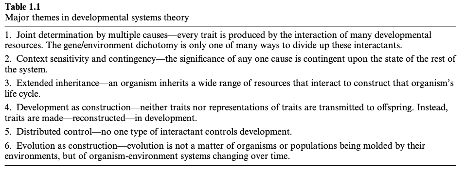
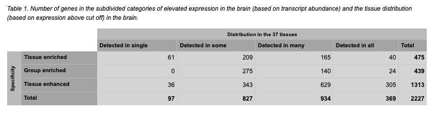
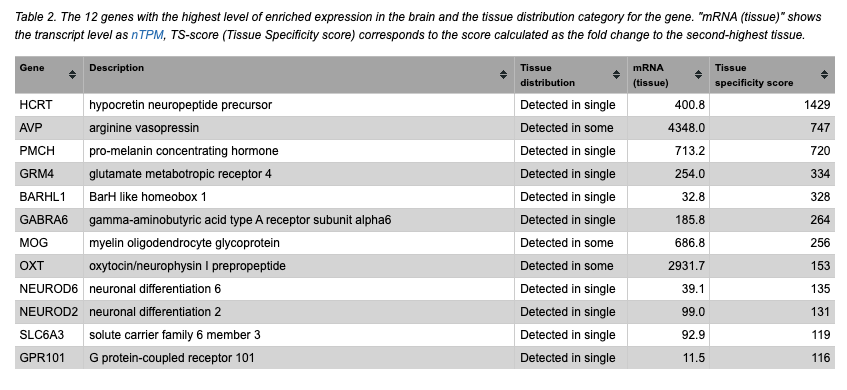
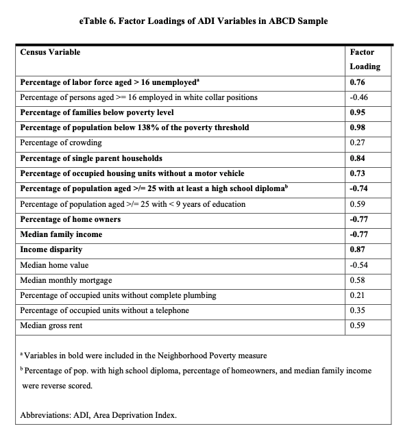
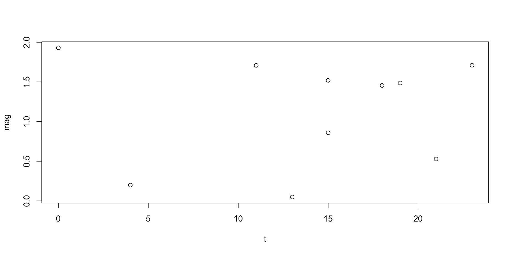

flowchart LR P[poverty] ---> S(chronic stress) S ---> H(HPA axis) H ---> B(hippocampus)
Systems
2025-12-12
Rick Gilmore
Department of Psychology
Prelude
Today’s topics
- Student Presentation O: Poverty is bad for cognition. (Presenter: Yeonjin Kim; Discussant: TBD)
- Student Presentation P: Poverty can be adaptive for cognition. (Presenter: Caesar Liu; Discussant: Natalie Byrd)
On systems
Toward and experimental ecology of human development
…rejects as spurious the argument that, because naturalistic observation preceded experimentation in both the physical and biological sciences, this progression is necessarily the strategy of choice in the study of human behavior and development. Such an interpretation mistakes a historical sequence for a causal one…
– Bronfenbrenner (1977)
Ecological environment
DEFINITION 2. The ecological environment is conceived topologically as a nested arrangement of structures, each contained within the next.
Nested structures
- Microsystem
- Place, time, physical features, activity, participant(s), role(s)
- Mesosystem
- System of microsystems
- Exosystem
- Macrosystem

Guy-Evans (2020)
On ecological validity
DEFINITION 3. Ecological validity refers to the extent to which the environment experienced by the subjects in a scientific investigation has the properties it is supposed or assumed to have by the investigator.
– Bronfenbrenner (1977) p. 516
On ecological experiments
DEFINITION 4. An ecological experiment is an effort to investigate the progressive accommodation between the growing human organism and its environment through a systematic contrast between two or more environmental systems or their structural components, with a careful attempt to control other sources of influence either by random assignment (contrived experiment) or by matching (natural experiment).
“Bronfenbrenner, if you want to understand something, try to change it.”
In ecological research, the principal main effects are likely to be interactions…
Developmental Systems Theory

Oyama et al. (2001) Table 1.1
On genetics
- Central dogma of molecular biology: Genetic information flows in one direction only (DNA -> RNA -> Protein)

Genes and the brain
At least a third of the approximately 20,000 different genes that make up the human genome are active (expressed) primarily in the brain. This is the highest proportion of genes expressed in any part of the body.
– “Brain Basics” (n.d.)

Genes and the brain

“The human brain - human brain - The Human Protein Atlas” (n.d.)
Evolution in Four Dimensions
- Jablonka & Lamb (2014)
- Genetic, epigenetic, behavioral, and symbolic inheritance systems

Beyond the laboratory
Laboratory tasks and stimuli lack the complexity of natural environments and may fail to capture the important statistical regularities that influence cognition – observations that have motivated calls for greater naturalism within cognitive science.
– Hartley (2022)
James Gibson famously argued for the importance of asking ‘not what’s inside your head, but what your head’s inside of’.
– Hartley (2022)
Supplemental
flowchart LR P[poverty] ---> S(chronic stress) S ---> H(HPA axis) H --->|cortisol| B(hippocampus) P ---> O[other factors] O ---> B
flowchart LR A[poverty] ---> B(PFC volume) A ---> C(PFC activity)
flowchart LR B(PFC volume) ---> C[cognitive function] D(PFC activity) ---> C
flowchart LR A[Neighborhood poverty] ---> B(PFC volume) A ---> C(hippocampal volume) A ---> D[cognitive performance] E[SES] ---> B & C & D
flowchart LR A[Neighborhood poverty] ==> B(PFC volume) A ===> C(hippocampal volume) A ===> D[cognitive performance] E[SES] ---> B & C & D
flowchart LR A[Neighborhood poverty] --> B(PFC volume) A ---> C(hippocampal volume) A ---> D[cognitive performance] B -.-> D C -.-> D
flowchart TD A[household income] ---> B[SES] C[PRFQ] ---> B

Taylor et al. (2020) eTable6
flowchart TD 1[unemployed] ---> B[Area Deprivation Index] 2[families in poverty] ---> B 3[pop < pov thresh] ---> B 4[single parent] ---> B 5[no car] ---> B 6[HS ed] ---> B 7[homeowner] ---> B 8[med income] ---> B 9[income disparity] ---> B
Harshness vs. predictability
- How to simulate the history of harshness and predictability?

Figure 1: Visualization of events that occur at different points in time with different magnitudes.
Resources
About
This talk was produced using Quarto, using the RStudio Integrated Development Environment (IDE), version 2026.4.0.526.
The source files are in R and R Markdown, then rendered to HTML using the revealJS framework. The HTML slides are hosted in a GitHub repo and served by GitHub pages: https://psu-psychology.github.io/psy-548-fall/
References
Amso, D. (2020). Neighborhood poverty and brain development: Adaptation or maturation, fixed or reversible?: Adaptation or maturation, fixed or reversible? JAMA Network Open, 3, e2024139. https://doi.org/10.1001/jamanetworkopen.2020.24139
Brain Basics: Genes and the Brain. (n.d.). Retrieved December 12, 2025, from https://www.ninds.nih.gov/health-information/public-education/brain-basics/brain-basics-genes-and-brain
Bronfenbrenner, U. (1977). Toward an experimental ecology of human development. The American Psychologist, 32, 513–531. https://doi.org/10.1037/0003-066x.32.7.513
Frankenhuis, W. E., Panchanathan, K., & Nettle, D. (2016). Cognition in harsh and unpredictable environments. Current Opinion in Psychology, 7, 76–80. https://doi.org/10.1016/j.copsyc.2015.08.011
Frankenhuis, W. E., Vries, S. A. de, Bianchi, J., & Ellis, B. J. (2020). Hidden talents in harsh conditions? A preregistered study of memory and reasoning about social dominance. Developmental Science, 23, e12835. https://doi.org/10.1111/desc.12835
Guy-Evans, O. (2020). Bronfenbrenner’s ecological systems theory. Simply Psychology. Retrieved from https://www.simplypsychology.org/bronfenbrenner.html
Hartley, C. A. (2022). How do natural environments shape adaptive cognition across the lifespan? Trends in Cognitive Sciences, 26, 1029–1030. https://doi.org/10.1016/j.tics.2022.10.002
Jablonka, E., & Lamb, M. J. (2014). Evolution in four dimensions: Genetic, epigenetic, behavioral, and symbolic variation in the history of life. Cambridge, MA: Bradford Books. Retrieved from https://www.amazon.com/Evolution-Four-Dimensions-Epigenetic-Philosophical/dp/0262525844
Ostrander, E. A. (n.d.). Central dogma. Retrieved December 12, 2025, from https://www.genome.gov/genetics-glossary/Central-Dogma
Oyama, S., Griffiths, P. E., & Gray, R. D. (2001). Cycles of contingency: Developmental systems and evolution. Xii, 377. Retrieved from https://psycnet.apa.org/record/2001-06709-000
Taylor, R. L., Cooper, S. R., Jackson, J. J., & Barch, D. M. (2020). Assessment of neighborhood poverty, cognitive function, and prefrontal and hippocampal volumes in children. JAMA Network Open, 3, e2023774. https://doi.org/10.1001/jamanetworkopen.2020.23774
The human brain - human brain - The Human Protein Atlas. (n.d.). Retrieved December 12, 2025, from https://www.proteinatlas.org/humanproteome/brain/human+brain